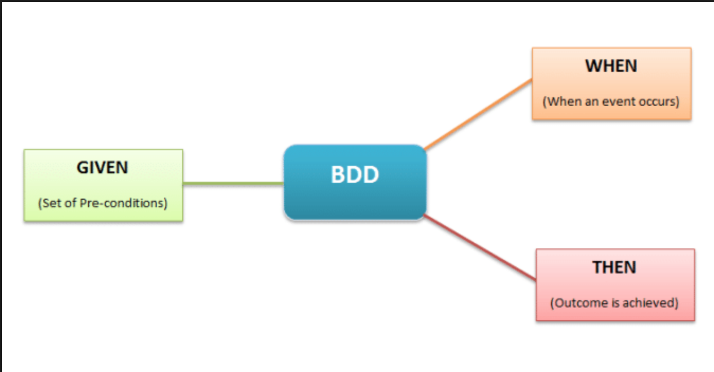

Test Status Menu
See how many test passed or failed
and how fast the tests took to run.
and how fast the tests took to run.
MariiaTarasiuk
Front-End Developer
Muniton team
Ipreo
From Angular v.5 To v.6
From RxJs v.5 To v.6
From Webpack v.3 To v.4
Jasmine To Jest
bunch of linked repos To Monorepo on Lerna
From handmade Selenium base framework To
developed by Jason Huggins in 2004 as an internal tool at ThoughtWorks
Selenium currently provides client APIs for Java, C#, Ruby, JavaScript and Python
JavaScript End-To-End testing framework
15 people from Atlanta, Philly, Boston, LA, Chicago, NYC
$ npm install -D cypress
$('.my-class-selector')
$('#my-id-selector')
$('p > ul > li')
cy.get('.my-class-selector')
cy.get('#my-id-selector')
cy.get('p > ul > li')
describe('My Simple Test', function() {
it('Looks similar right?', function() {
expect(true).to.equal(true)
})
})
cy.visit('/my/resource/path')
.then(() => {
return cy.get('.awesome-selector')
})
.then(($element) => {
return cy.click($element)
})
.then(() => {
return cy.url()
})
.then((url) => {
expect(url).to.eq('/my/path#awesomeness')
})
Behavior Driven Development
describe business behavior without the need to go into detail of implementation
Feature: Programmer deep dive into testing
Scenario: Dev learn how to wright test
When I open the cypress.io and pick Documentation
And I open search and type "screenshot"
Then I get list with follow result
| screenshot | Screenshots and Videos| Screenshot API |
@When('I open the cypress.io and pick Documentation',
() => {...})
@When('I open search and type {paragName}',
(paragName) => {...})
@Then('I get list with follow result',
rawTable => {...})
cy.server()
// we set the response to be the todo-mock.json fixture
cy.route('GET', 'todo-list/*', 'fixture:todo-mock.json')
cy.server()
cy.fixture('todo-mock.json').as('todoJSON')
cy.route('GET', 'todo-list/*', '@todoJSON')
//returns dogs.png as Base64
cy.fixture('images/dogs.png')
Then You can stub any data with dataTable
| test 1 | test 2 | test 3 |
it('let me debug when the after the command executes',
function () {
cy.visit('/my/page/path')
cy.get('.selector-in-question')
.then(($selectedElement) => {
// Debugger is hit after the cy.visit
// and cy.get command have completed
debugger
})
})
it('let me debug like a fiend', function() {
cy.visit('/my/page/path')
cy.get('.selector-in-question')
.debug()
})
or use DevTools!
for me it cost 4 hours debugging